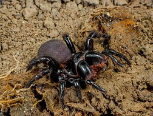
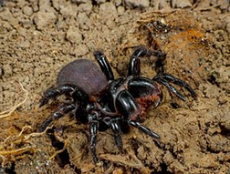
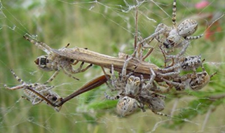
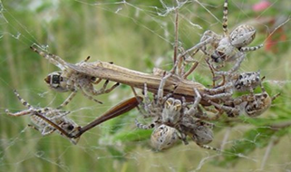

PLENARY SPEAKERS
ROBERT JOHN RAVEN - Queensland Museum, Australia
 

Robert Raven is currently Head and Senior Curator of Chelicerata at the Queensland Museum, Australia. He completed his PhD from University of Queensland in 1981.
Robert Raven’s research focuses on the systematics of Theraphosidae, Ctenizidae, Idiopidae, Nemesiidae, Corinnidae and many more! Throughout his active career, he has described at least 351 new spider species and 42 genera from Australia, New Caledonia, Fiji, Solomon Islands, Colombia, Peru, Panama, Mexico, India, Southeast Asia, and New Guinea.
His current projects involve Spider Catalogue of the World (as Chairman with the American Museum of Natural History, USA), Taxonomic Source for Spider Venom database, and Taxonomy of Australian Theraphosidae. Robert Raven is also the founder of the Australasian Arachnology Society and editor of Zootaxa (Infraorder Mygalomorphae).
DEBORAH RUTH ROAN SMITH - University of Kansas, USA
 

Deb Smith is Professor of Ecology and Evolutionary Biology at the University of Kansas, USA. She completed her PhD from Cornell University in 1982 working with Dr. Ruth Buskirk, one of the first modern biologists to study social behavior in spiders.
Deb Smith’s research focuses on the population genetics, behavior and evolution of group-living and sociality in spiders (Anelosimus & Stegodyphus). She has conducted research in the American southwest, South America (Suriname and Trinidad), Africa (Gabon and South Africa), the Middle East (Israel), and Asia, including India and Thailand.
Her work on spiders and mites has been supported by grants from the US National Science Foundation, the US Department of Agriculture, the National Geographic Society and the US-Israel Binational Science Foundation.
During 1982–2016, Deb Smith served as Chair of the proposal review committee for the American Arachnological Society Research Fund and recently in 2017 has become the Editor-in-Chief of Journal of Arachnology.